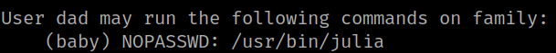
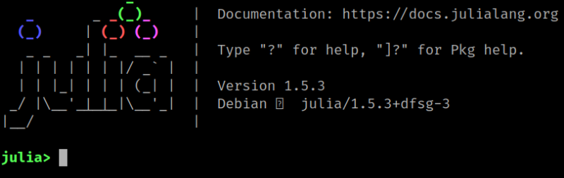

4.8 Dad's sudoer
Look at the programs dad can run as sudo.
1. Run the following command on dad's shell.
dad@family:~$ sudo -l
Output:

So dad can run as user baby “/usr/bin/julia”.
2. Run the program.
dad@family:~$ sudo -u baby /usr/bin/julia
Output:

3. Running External Programs with Julia. More info.
julia> run(`bash`)
You'll get a shell like “baby” with this command.
Output: